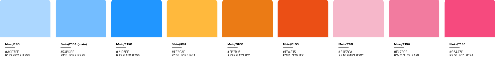

Shippū
Shippu is a design and marketing agency I founded with Clara, my partner in life and creative adventures. I designed its visual identity and website with a focus on modernity, freshness, and a playful touch. The challenge: to convey professionalism without losing warmth.
Go to Shippū
We wanted to build a brand from the ground up that represented who we are: creative, flexible, and strategic. Shippu isn't just an agency; it's a way of working with good energy, no fuss, and real results.
Problems to solve
- They don't have a visual identity; they're a 100% new creative studio.
- They don't have a website or social media.
- They need clients to be able to contact them quickly.
- They need to quickly explain what they do and how they do it.

I created the entire branding, from the naming to the visual system. . I also designed and programmed the website from scratch, focusing on an experience that blends clarity, impact, and movement. worked with Figma, Illustrator, After Effects (for some animated details), and pure code: HTML, CSS, and JavaScript.
The process
1. Research & Concept Development
Before defining Shippu’s visual identity and website structure,
we conducted a brief research phase to understand our market positioning and creative direction:
- Market Analysis: We analyzed several creative studios and marketing agencies, identifying a common issue: most of them felt corporate, rigid, and lacked a playful yet professional tone.
- Target Audience Insights: Through informal interviews with potential clients, we learned they valued modernity, freshness, and a human touch over overly formal communication.
- Visual Benchmarking: We collected references from Japanese-inspired design systems, minimalistic branding, and dynamic motion-based websites that matched our desired energy.
- Naming Inspiration: The name Shippu comes from “shippuuden” (疾風伝), meaning “chronicles of a hurricane,” symbolizing speed, creativity, and impactful storytelling.
- Target Audience Insights: Through informal interviews with potential clients, we learned they valued modernity, freshness, and a human touch over overly formal communication.
- Visual Benchmarking: We collected references from Japanese-inspired design systems, minimalistic branding, and dynamic motion-based websites that matched our desired energy.
2. Visual Identity
The Shippu logo combines fluid abstract lines with a bold rounded typeface, visually
representing the concept of “hurricane winds” (疾風). The icon illustrates movement and creative flow, while the typography ensures readability and strong brand presence across both digital and print applications.
- The icon symbolizes speed, adaptability, and creativity (core attributes of the agency.)
- The custom rounded lettering adds approachability while maintaining professional weight.
- The extended macron “ū” emphasizes a distinct, memorable pronunciation aligned with the Japanese inspiration.
“Design is important. Marketing is important too. But above all, how you make the person who chooses you feel matters.”
System Colors
UX/UI Design Approach
Unlike traditional projects that require extensive wireframing, Shippu’s website was designed and built directly in high-fidelity. Thanks to my experience in UX/UI and my deep understanding of the brand vision, I was able to skip unnecessary low-fidelity stages and move straight into crafting the final experience.
- Direct-to-UI Workflow: Designed directly in Figma with an eye on usability and visual impact from the start.
- Microinteractions: Custom animations and transitions created in pure HTML, CSS, and JavaScript to add movement without sacrificing performance
- Content Architecture: Structured the site for clear navigation, minimal friction, and quick access to contact forms.
- Mobile-first: Responsive design was considered throughout, ensuring a seamless experience across devices.
This approach allowed us to launch faster while maintaining pixel-perfect quality and a playful yet professional feel, perfectly aligned with the agency’s identity
Do you want to see the figma? Contact me and i show you how i did it.

Shippu in action
Results & Impact
The launch of Shippu’s brand and website quickly gained traction, proving the effectiveness of the design approach:
- Global Reach: 1,260+ total requests from 5 countries (US, Argentina, Mexico, China, Panama).
- Strong Engagement: 567 unique users in 90 days, with 565 new visitors, and minimal drop-offs during navigation.
- Traffic Sources: 250+ visits from cross-network campaigns, 200+ from organic social, and 140 direct visits showing brand recall.
- Performance: Nearly 1 GB of data transferred in a week, reflecting active interaction with the site’s content.
This early traction demonstrates how a bold visual identity and intuitive UX can rapidly increase visibility and attract potential clients worldwide.